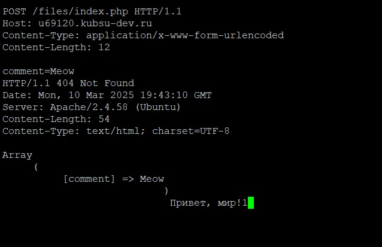
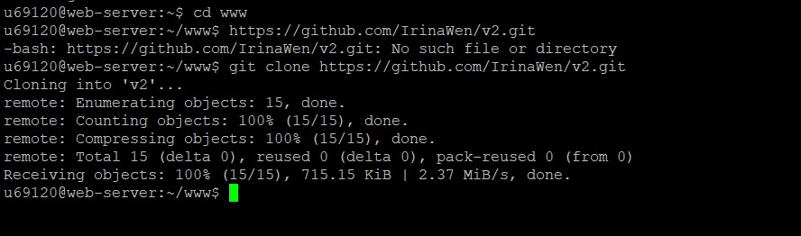

1. Заливаем файлы в каталоге files на веб-сервер через GitHub и git clone в Putty и проверяем работоспособность index.php.
Загруженные файлы открываются по ссылке http://u69120.kubsu-dev.ru/files/.
Файл index.php работает корректно, выводит все описанное в коде: массив, в который будет записан комментарий из задания 5 через метод POST; сообщение "Привет, мир!" и 1, обозначающую сработавший скрипт и очистившуюся память.
2. Подключаемся к telnet через Putty c помощью 80 порта, личного учебного сервера u69120.kubsu-dev.ru и протокола Raw (данные любого типа).
Протокол telnet, созданный на основе TCP, позволяет передавать на удаленный сервер простые текстовые команды для ручного управления процессами и включения взаимодействия между ними.
Запросы будем писать в текстовый файл и далее через буфер обмена мышью копировать запрос из текстового файла. Необходимо для сохранения синтаксиса и чтобы успеть прописать запрос до закрытия сессии.
3. Методом GET в протоколе HTTP 1.0 получаем главную страницу.
HTTP/1.1 200 OK - запрос выполнен успешно, ресурс найден.
Date: Mon, 10 Mar 2025 18:57:22 GMT - дата и время обработки запроса.
Server: Apache/2.4.58 (Ubuntu) - версия сервера, обрабатывающего запрос.
Content-Length: 15 - длина возвращаемого содержимого в байтах.
Connection: close - указывает, что соединение будет закрыто после передачи ответа.
Content-Type: text/html; charset=UTF-8 - указывает, что содержимое является HTML с кодировкой UTF-8.
PHP is working - cообщение, которое подтверждает, что PHP успешно настроен и функционирует на сервере.
4. Методом GET в протоколе HTTP 1.1 получаем внутреннюю страницу:
Ответ сервера почти такой же, как и при протоколе HTTP 1.0, отличие только в соединении. В HTTP 1.0 соединение закрытое, устанавливаемое для 1 запроса, закрывается после каждого получения ответа на запрос. В HTTP 1.1 можно использовать одно соединение для нескольких запросов.
5. Методом HEAD в протоколе HTTP 1.1 определяем размер файла file.tar.gz (11335 байт), не скачивая его.
Last-Modified: Mon, 10 Mar 2025 18:20:49 GMT - указывает на последний момент изменения указанного ресурса.
ETag: "c247-630010819142b" - уникальная метка версии ресурса, используемая для кэширования.
Accept-Ranges: bytes - указывает, что сервер поддерживает запросы диапазонов, позволяя извлекать части ресурса.
Content-Type: application/x-gzip - указывает, что возвращаемые данные сжаты в формате Gzip.
6. Методом HEAD в протоколе HTTP 1.1 определяем медиатип ресурса /image.png (image/png).
Сервер выдал тип ресурса image/png, его уникальный идентификатор и общий размер 10506 байт.
7. Методом POST в протоколе HTTP 1.1 отправляем комментарий на сервер по адресу /index.php.

В заголовке прописываем Content-Type application/x-www-form-urlencoded (закодировано в форму) и длину тела Content-Length вместе с comment=.
HTTP/1.1 404 Not Found - так как в файле index.php прописано изменение заголовка, то вместо HTTP/1.1 200 OK выводится это сообщение (запрашиваемый ресурс не найден на сервере).
В Array передался наш комментарий.
8. Методом GET в протоколе HTTP 1.1 получаем первые 100 байт файла /file.tar.gz.
HTTP/1.1 206 Partial Content - указывает, что сервер возвращает частичное содержимое запрашиваемого ресурса.
Content-Length: 100 - длина части контента, который возвращается в ответе.
Content-Range: bytes 0-99/11335 - указывает, что возвращаемая часть охватывает байты с 0 по 99 из общего объема в 11335 байт.
В нижней части скриншота отображены бинарные данные, которые представляют собой часть загруженного файла, сжатого в формате Gzip.
9. Методом HEAD в протоколе HTTP 1.1 определяем кодировку ресурса /index.php (UTF-8).
На скрине видно, что кодировка ресурса charset=UTF-8, а заголовок HTTP/1.1 404 Not Found снова изменен.
10. Сверстанную страницу закидываем в GitHub и на учебный сервер командой git clone в Putty.

Страница открывается по ссылкам https://irinawen.github.io/v2/ и http://u69120.kubsu-dev.ru/v2/.